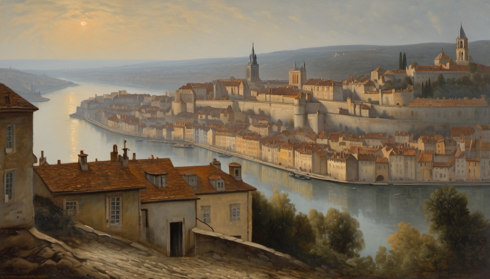
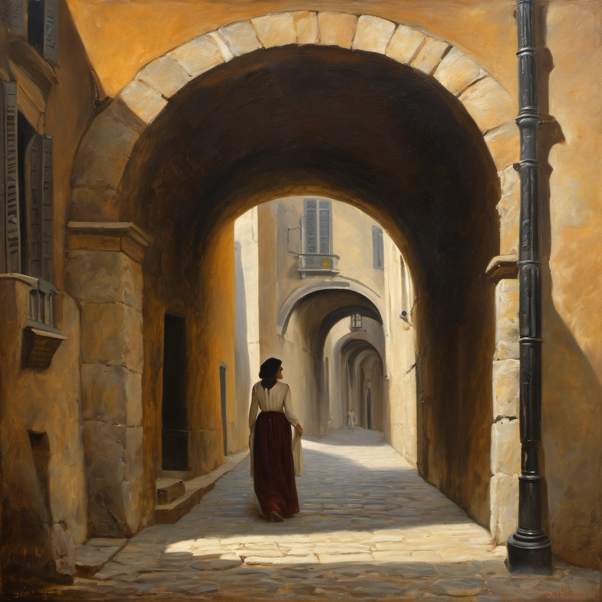
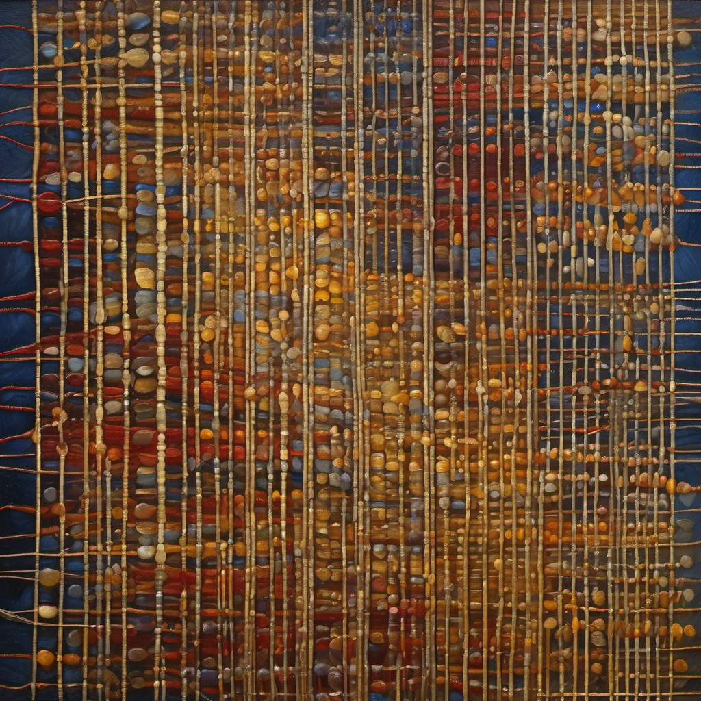
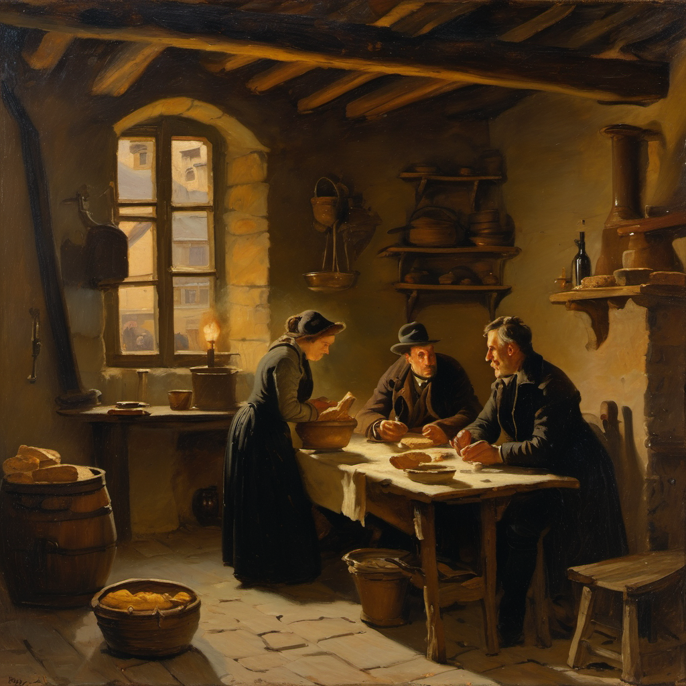
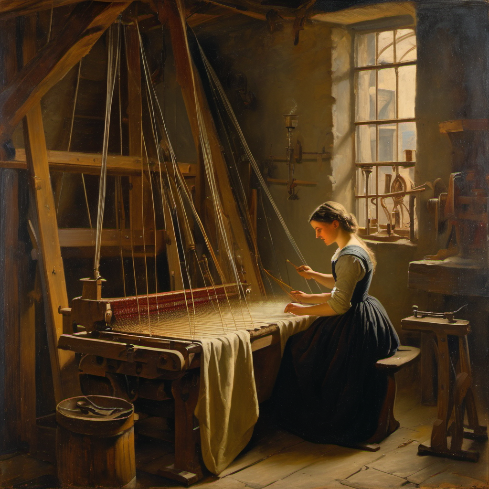
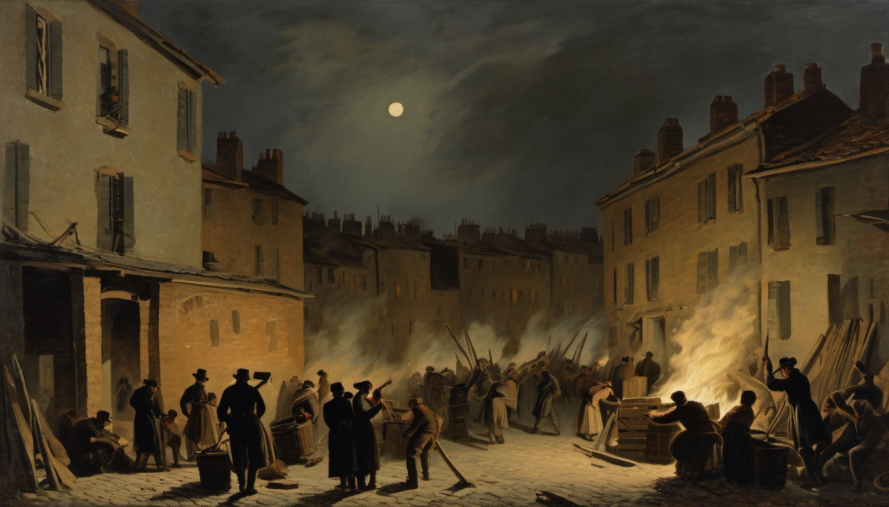
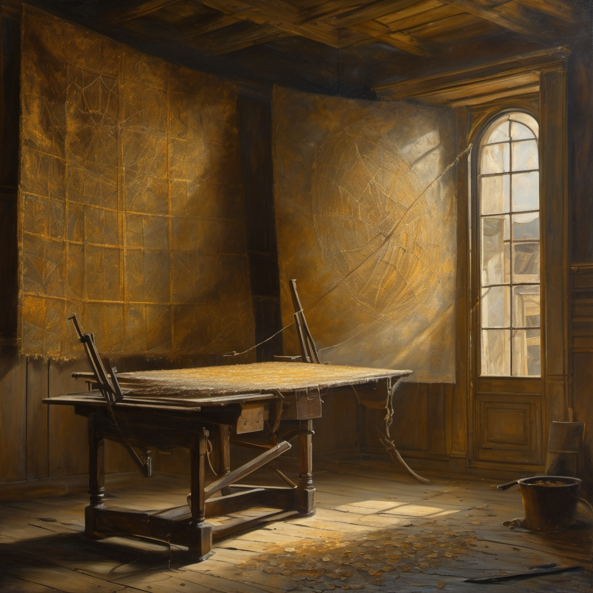
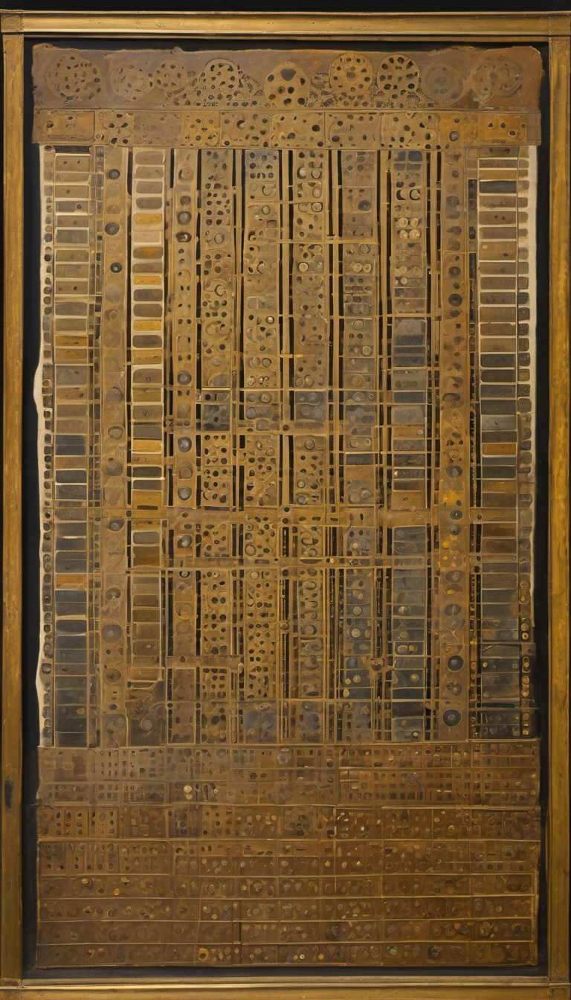

1831年のリヨンで、一人のカニュの娘が、
自分の家族の craft が、誰にも気づかれないまま
世界の底に沈んでいく数ヶ月を、生きる。

この映画は、ある産業（手織りの絹工業）が、転換の中でじわじわと衰えていく数ヶ月を、 その真ん中で生きる一人の少女を通して描く。
物語の軸となる問いは:
この問いは観客に向けられた教訓ではない。
director 自身が自分に向けた問いとして成立する映画。
答えを先に用意してから作らない。
不確定性を作る側が体で抱え続ける。
自分が答えられない問いを、観客に押し付けない。
一緒に抱えて、最後まで答えを出さないまま、でも美しく保つ。
リヨン市の北、丘の上に広がる絹織物の街 Croix-Rousse（クロワ=ルース）。 17世紀以来、ヨーロッパの絹の都。教会祭壇布、王侯貴族の衣、パリのクチュールに送る高級品が、 この丘の屋根裏工房で織られている。

1831年時点で使われる色。モーヴは1856年以降の合成染料（未来の予兆として台詞か暗示で）
| 行き先 | 時代の位置 | 作中の扱い |
|---|---|---|
| 教会祭壇布 | 変わらないもの | 祖父の代から続く仕事。revolution を越えて注文は来る |
| 王侯貴族の衣 | 消えていくもの | 7月革命後、注文が減り始めた。途中で止まる半完成品 |
| パリのクチュール | 来つつあるもの | ブルジョワ市場、速く回る流行、fabricants が押す |
ジャカード織機の音を示すフランス語の擬音語。 canut たちの工房で、朝5時から夜まで、街全体で同時に、違う位相で鳴り続けた。
この4拍が、家族の呼吸のリズムそのもの。 朝食、会話、徒弟への指示、近所への呼びかけ、全てがこの4拍の上で行われる。
物語の中盤、この bistanclaque（呼吸する音）が、 遠くから届く 蒸気機関の "rhythmical, unvarying pace"（呼吸しない音）と対比される。
これはアニメの技術そのもので表現可能: bistanclaque は 2コマ打ちの微妙な揺らぎ、 蒸気は 1コマ打ちの完璧な均一。 観客は意識しない。でも体でわかる。

二人。それぞれが、歴史の変化の反対側に立っている。 そして、どちらもそれを知らない。
沈む側。元ある世界の住人。 家族の craft に誇りを持っている。 外から観察する目であり、内で生きる体。 映画の emotional center。
比重: 6
沈める側。新しい世界を呼び寄せる人。 穿孔カードの仕組みを観察しに来た。 真摯で好奇心深く倫理的。 だが、彼の仕事は彼女の世界を変えていく。
比重: 4

彼は 彼女の家族が織る布の、穿孔カードのメカニズムについて論文を書くつもりでいる。
彼女は 父や徒弟が働く工房が、どう世界を変えていくかを考えたこともない。
二人の会話は、二つの未来の回路が、お互いを知らないまま響き合っている。

観客と canut の娘の関係は、四重に捻れている:
| 次元 | 彼女の位置 |
|---|---|
| 歴史的 | 我々より前（1831年） |
| 体験的 | 我々より 先を行っている（既に閾値を跨いだ） |
| 認識的 | 我々は彼女より多くを知っている（彼女の ending を知っている） |
| 倫理的 | でも彼女が我々に教える側 |
普通のドラマ・アイロニー（神の視点）とは逆。 「知っている我々」が「知らない彼女」から学ぶ、という奇妙で正しい構造。
観客は彼女の無知を見て悲哀を感じる途中で、「自分も同じ状態」と気づく。
2-3ヶ月、1831年10月〜12月。 約 90-110分の長編。
彼女の日常、家族、じわじわの前提、tarif 交渉の緊張。
彼の到着——リヨンを歩く、工房を観察する、偶然彼女と出会う（bouchon）。
開幕5分で 「この家族はもう長いことじわじわ痩せている」 を仕込む: 古い織機の擦り切れた木、年々下がる tarif の帳簿、父の呟き、辞めていく徒弟の噂。
毎朝の会話が 週に一度の約束になる。 tarif 協定が結ばれる → fabricants が反故にする。 街の空気が変わる。
この蜂起は 反機械ではない。革命ではない。
純粋に 「既に結ばれた賃率協定を、守れ」 という要求の蜂起が、
国民衛兵の発砲によって暴力化したもの。
"Vivre en travaillant ou mourir en combattant." 働いて生きるか、戦って死ぬか。

bouchon が空。家に急ぐ。遠い銃声。 父が軽傷で戻る。沈黙。 翌日、彼女は誰かを探しに街へ。 知っている顔が遺体で運ばれる。言葉が出ない。 街は奇妙に静か。軍が来る。通りを歩く兵士たち。
宿主が外出を禁じる。窓から整列する国民衛兵を見る。 遠い銃声。煙。外出できない日々。 街を歩いてみる。bouchon は閉まっている。 ブルジョワのディナーに呼ばれる。彼らの「秩序」に違和感。 軍の到着。彼は安堵できない。
Act 2b の全期間、二人は会わない。 物理的に隔てられている。歴史が二人の間に入ってくる。 同じ時間を、全く違う濃度で生きている。
工房の再開。織機の上に埃。父は黙って座る。 最初の bistanclaque が鳴る。でも音が少し違う。なぜかわからない。
彼との最後の再会。bouchon、朝。二人ともお互い何を言うべきか持たない。でも座る。 沈黙。スープを啜る。
彼がリヨンを去る車の音。 彼女が工房で織り続ける bistanclaque。 二つの音が並ぶ。
映画の emotional climax は、蜂起じゃない。
泣く場所は、蜂起の後、二人が沈黙したまま座っている bouchon の朝。
1831年時点では、絹工業は まだ健在。bistanclaque は鳴り続けている。 本当の没落は19世紀末〜20世紀初頭。
2-3ヶ月の物語の中で、200年の没落をどう含めるか。 答えは アニメの時間圧縮能力。
15秒で150年を通過:

この物語は 手仕事の物語。 アニメーションは 手仕事そのもの。 canut の物語を、canut の仕事の方法で作る。

そして2026年、アニメ制作にも AI が入りつつある。
director 自身が、この映画を作りながら、自分の手仕事の意味を問い続ける。
live action で撮ったら、この映画は成立しない。
手で描くという行為そのものが、映画の主題の実践だから。
この物語は 遠い過去を描きながら、2026年の我々を映す。 canut が1831年に感じたことは、我々が2026年にAIに対して感じていることと、驚くほど重なる。
| 1831年の canut | 2026年の我々 |
|---|---|
| 変化は「崖」じゃなく「長い坂」 | 仕事は残るが価値が蒸発する |
| 敵は機械じゃなく価格決定権 | 問題はAIじゃなくプラットフォーム支配 |
| ジャカードが美しくて憎めない | AIの出力が美しくて憎めない |
| 自分が次の時代の種を織っている | 自分の作品がAI訓練データになる |
| 語彙がない状態を生きる | 「AI不安」はまだ粗い言葉 |
| 仕事が消えるより、意味が痩せる | 意味のデフレが人を疲弊させる |
観客は遠い時代を観ているようで、実は自分を観ている。
鉄道を初めて見た村人と、ChatGPTを初めて見た我々は、同じ顔をしている。
以下は本企画書作成時点で、まだ決まっていない、または複数の選択肢がある事項。
チャールズ・バベッジ本人（1791–1871、英、1831年40歳）にすると、歴史的アイロニーが2倍濃くなる。
彼は実際にジャカード織機の穿孔カードにインスパイアされ、後年Analytical Engine を構想、24,000枚カードのジャカール肖像画を所有していた。
ただし、1831年にリヨンを訪れた史実はまだ確認できていない。
架空のバベッジ的人物にする選択肢もある。
主人公の名前、父・母・兄弟・徒弟の構成、家族内の力学。まだ設計していない。
父は Mutualistes（canut の労働組合的組織）の一員、という仮設定のみ。
彼女が抱えている一番の迷い:
父との関係か、自分の将来か、織ることへの矛盾した愛か、外の世界への好奇心か。
これが決まると、彼女の行動の origin が固まる。
1831年時点、ジョゼフ・マリー・ジャカール本人（79歳、1834年没）は生きている。
娘が一度だけ彼に会う、というシーンはあり得る。だが入れると歴史大作的な重力が働いて娘の物語が沈む危険。
現時点では 街の噂としてのみ言及する方針。
この肖像画は1839年の作品で、1831年にはまだ存在しない。
案A: 彼が「そう遠くない将来、これが可能になる」と語る予兆として。
案B: ラストの圧縮エピローグで、博物館の展示として現れる。
現時点では 両方を薄く入れる方針。
歴史リアリズム一本で行くか、薄いファンタジー層を入れるか。
検討中で保留された候補: 時間の糸が見える / パターンが抜け出す / 街が呼吸する / 届かない手紙 / 街の上の鳥 / 月光下の traboules で時代を跨ぐ など。
蚕は家の片隅で生きている素材として、どこかに残す余地。
映画を何で始めるか。象徴的な第一フレーム——音、画、触感。
候補: bistanclaque の音で始める / 絹の糸のクローズアップ / 2026年の博物館から1831年に溶ける / 彼女の目覚め
本企画の基礎資料。プロジェクトフォルダ:
2000_Creative/2900_Sandbox/bistanclaque/
research_codex_macro.md — マクロ史・年代記・職種別クロニクル・抵抗運動・一次引用（Codex xhigh、23KB）research_claude_atmosphere.md — 光/音/匂い/テンポ・職人肉声・bistanclaque 音響分解・情景フラグメント（36KB）proposal.html — 本企画書（このファイル）
これ以上も、これ以下もない。
観客の中で、映画は完成する。